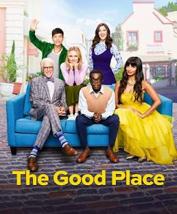
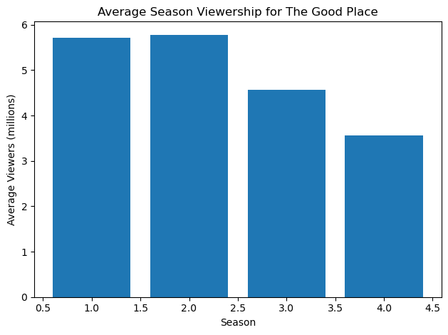
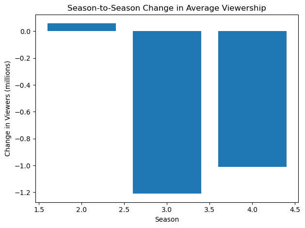
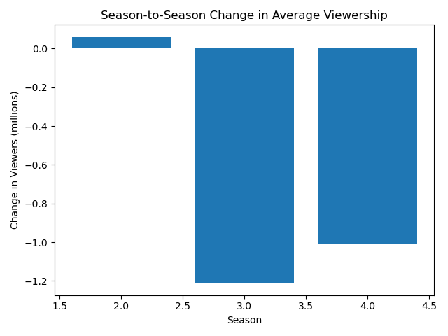

The Good Place is an American fantasy-comedy television series created by Michael Schur. It aired on NBC from 2016 to 2020 and gained attention for its unique take on ethics, the afterlife, and what it means to be a good person.
is a show that has received critical acclaim and a dedicated fanbase.

```{python}import pandas as pdurl ="https://en.wikipedia.org/wiki/List_of_The_Good_Place_episodes"tables = pd.read_html(url)# Display the number of tables foundprint(f"Number of tables found: {len(tables)}")for i, table inenumerate(tables):print(f"\nTable {i}")print(table.head())```
Number of tables found: 8
Table 0
Season Episodes Originally released Rank \
Season Episodes Episodes.1 First released Last released Rank
0 1 13 13 September 19, 2016 January 19, 2017 77
1 2 13 13 September 20, 2017 February 1, 2018 77
2 3 13 13 September 27, 2018 January 24, 2019 99
3 4 14 14 September 26, 2019 January 30, 2020 92
Average viewers (in millions inc. DVR)
Average viewers (in millions inc. DVR)
0 5.72[33]
1 5.78[34]
2 4.57[35]
3 3.56[36]
Table 1
No. overall No. in season Title \
0 1 1 "Everything Is Fine[c]"
1 2 2 "Flying"
2 3 3 "Tahani Al-Jamil"
3 4 4 "Jason Mendoza"
4 5 5 "Category 55 Emergency Doomsday Crisis"
Directed by [b] Written by [37] Original release date \
0 Drew Goddard Michael Schur September 19, 2016
1 Michael McDonald Alan Yang September 19, 2016
2 Beth McCarthy-Miller Aisha Muharrar September 22, 2016
3 Payman Benz Joe Mande September 29, 2016
4 Morgan Sackett Matt Murray October 6, 2016
Prod. code [37] U.S. viewers (millions)
0 101 8.04[38]
1 102 8.04[38]
2 103 5.25[39]
3 104 4.45[40]
4 109 4.97[41]
Table 2
No. overall No. in season Title \
0 14[d] 1 "Everything Is Great!" (Part 1)
1 15[d] 2 "Everything Is Great!" (Part 2)
2 16 3 "Dance Dance Resolution"
3 17 4 "Team Cockroach"
4 18 5 "Existential Crisis"
Directed by [b] Written by [b] Original release date \
0 Trent O'Donnell Jen Statsky September 20, 2017
1 Trent O'Donnell Joe Mande September 20, 2017
2 Drew Goddard Megan Amram September 28, 2017
3 Morgan Sackett Dan Schofield October 5, 2017
4 Beth McCarthy-Miller Andrew Law October 12, 2017
U.S. viewers (millions)
0 5.28[49]
1 5.28[49]
2 4.67[50]
3 4.17[51]
4 4.05[52]
Table 3
No. overall No. in season Title \
0 27[e] 1 "Everything Is Bonzer!" (Part 1)
1 28[e] 2 "Everything Is Bonzer!" (Part 2)
2 29 3 "The Brainy Bunch"
3 30 4 "The Snowplow"
4 31 5 "Jeremy Bearimy"
Directed by [b] Written by [b] Original release date \
0 Dean Holland Jen Statsky & Michael Schur September 27, 2018
1 Dean Holland Jen Statsky September 27, 2018
2 Jude Weng Dan Schofield October 4, 2018
3 Beth McCarthy-Miller Joe Mande October 11, 2018
4 Trent O'Donnell Megan Amram October 18, 2018
U.S. viewers (millions)
0 3.13[62]
1 3.13[62]
2 2.96[63]
3 2.71[64]
4 2.70[65]
Table 4
No. overall No. in season Title \
0 40.0 1.0 "A Girl from Arizona" (Part 1)
1 41.0 2.0 "A Girl from Arizona" (Part 2)
2 42.0 3.0 "Chillaxing"
3 43.0 4.0 "Tinker, Tailor, Demon, Spy"
4 44.0 5.0 "Employee of the Bearimy"
Directed by [b] Written by [b] Original release date \
0 Drew Goddard Andrew Law & Kassia Miller September 26, 2019
1 Drew Goddard Andrew Law & Kassia Miller October 3, 2019
2 Anya Adams Aisha Muharrar October 10, 2019
3 Morgan Sackett Cord Jefferson October 17, 2019
4 Beth McCarthy-Miller Joe Mande October 24, 2019
U.S. viewers (millions)
0 2.42[74]
1 2.11[75]
2 1.92[76]
3 2.02[77]
4 1.91[78]
Table 5
No. \
0 1
1 Shawn and the other demons discuss how to go a...
2 2
3 Shawn and the demons try to come up with four ...
4 3
Title \
0 "Part 1: The Mission"
1 Shawn and the other demons discuss how to go a...
2 "Part 2: The Candidates"
3 Shawn and the demons try to come up with four ...
4 "Part 3: The Takeout Order"
Directed by [b] \
0 Eric Kissack
1 Shawn and the other demons discuss how to go a...
2 Eric Kissack
3 Shawn and the demons try to come up with four ...
4 Eric Kissack
Original release date \
0 September 13, 2019
1 Shawn and the other demons discuss how to go a...
2 September 13, 2019
3 Shawn and the demons try to come up with four ...
4 September 13, 2019
Unnamed: 4
0 NaN
1 Shawn and the other demons discuss how to go a...
2 NaN
3 Shawn and the demons try to come up with four ...
4 NaN
Table 6
Season Episode number \
Season Season.1 1 2 3 4 5 6 7 8
0 NaN 1 8.04 8.04 5.25 4.45 4.97 4.23 3.79 3.89
1 NaN 2 5.28 5.28 4.67 4.17 4.05 3.92 3.97 3.06
2 NaN 3 3.13 3.13 2.96 2.71 2.70 2.67 2.72 2.77
3 NaN 4 2.42 2.11 1.92 2.02 1.91 2.21 1.98 2.06
Average
9 10 11 12 13 14 Average
0 3.68 3.53 3.64 3.93 3.93 – 4.72
1 3.08 3.11 3.00 3.65 3.19 – 3.88
2 2.69 2.58 2.72 2.52 2.39 – 2.74
3 2.05 2.08 1.93 2.12 2.32 2.32 2.09
Table 7
vteThe Good Place vteThe Good Place.1
0 Seasons 1 2 3 4
1 Episodes "Everything Is Fine" "Michael's Gambit" "Somew...
2 Other Awards and nominations
```{python}import matplotlib.pyplot as plt # Import matplotlib for plotting# Data from Wikipedia tabledata = {"Season": [1, 2, 3, 4],"Average Viewers (millions)": [5.72, 5.78, 4.57, 3.56]}df = pd.DataFrame(data)# Display the summary tableprint("Average Viewers per Season:")print(df)# Plot the bar chartplt.figure()plt.bar(df["Season"], df["Average Viewers (millions)"])plt.xlabel("Season")plt.ylabel("Average Viewers (millions)")plt.title("Average Season Viewership for The Good Place")plt.tight_layout()plt.savefig("season_viewership.png")plt.show()```
Average Viewers per Season:
Season Average Viewers (millions)
0 1 5.72
1 2 5.78
2 3 4.57
3 4 3.56

Viewership peaked at 5.78 million in Season 2 and then declined by 38.4% to 3.56 million by Season 4.
```{python}# Manual summary data from Wikipedia tabledata = {"Season": [1, 2, 3, 4],"Average Viewers (millions)": [5.72, 5.78, 4.57, 3.56]}df = pd.DataFrame(data)# Calculate season-to-season changesdf['Change (millions)'] = df['Average Viewers (millions)'].diff()df['Percent Change (%)'] = df['Average Viewers (millions)'].pct_change() *100# Display the table of changesprint("Season-to-Season Viewership Changes:")print(df[['Season', 'Change (millions)', 'Percent Change (%)']])# Plot the change graphplt.figure()plt.bar(df['Season'][1:], df['Change (millions)'][1:])plt.xlabel("Season")plt.ylabel("Change in Viewers (millions)")plt.title("Season-to-Season Change in Average Viewership")plt.tight_layout()plt.savefig("season_viewership_change.png")plt.show()```
Season-to-Season Viewership Changes:
Season Change (millions) Percent Change (%)
0 1 NaN NaN
1 2 0.06 1.048951
2 3 -1.21 -20.934256
3 4 -1.01 -22.100656

Season-to-Season Viewership Changes

Viewership increased slightly by 0.06 million (1.0%) from Season 1 to Season 2, then dropped by 1.21 million (−20.97%) from Season 2 to 3, and further declined by 1.01 million (−22.11%) into Season 4.
 is a show that has received critical acclaim and a dedicated fanbase.
is a show that has received critical acclaim and a dedicated fanbase.